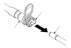

Kraftstoffleitung/Schnellkupplung Einbau
|
HINWEIS: Vor der Arbeit an Kraftstoffleitungen und Kupplungen
die ‘‘Kraftstoffleitung/Schnellkupplung Warnhinweise'' lesen.
|

|

|
|
Anschluss mit einem neuen Sicherungsbügel

Wiederanschluss an den bestehenden Sicherungsbügel

Anschluss an neue Kraftstoff-Leitung
 |